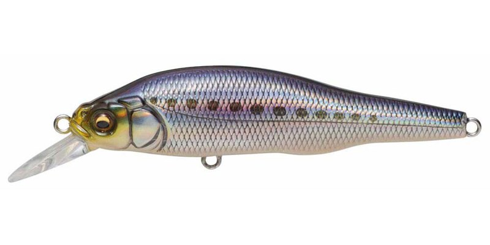
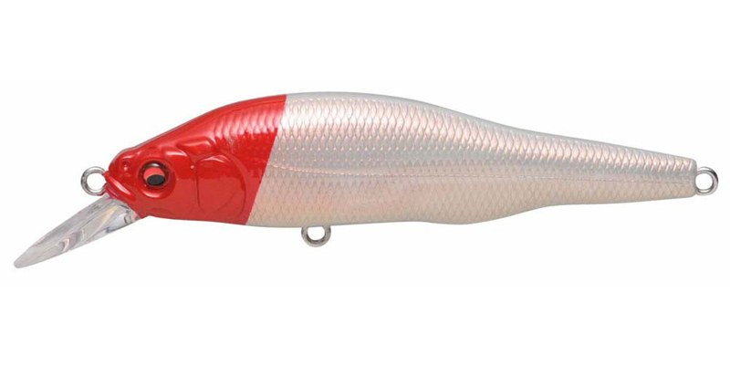
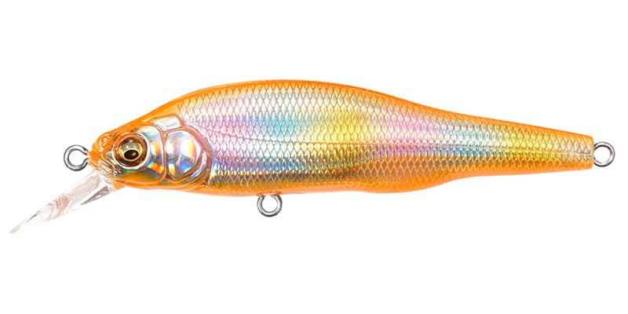
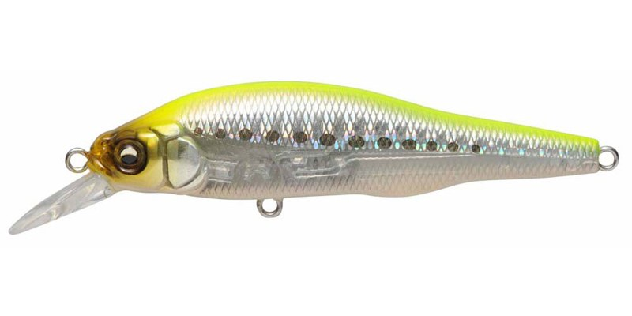
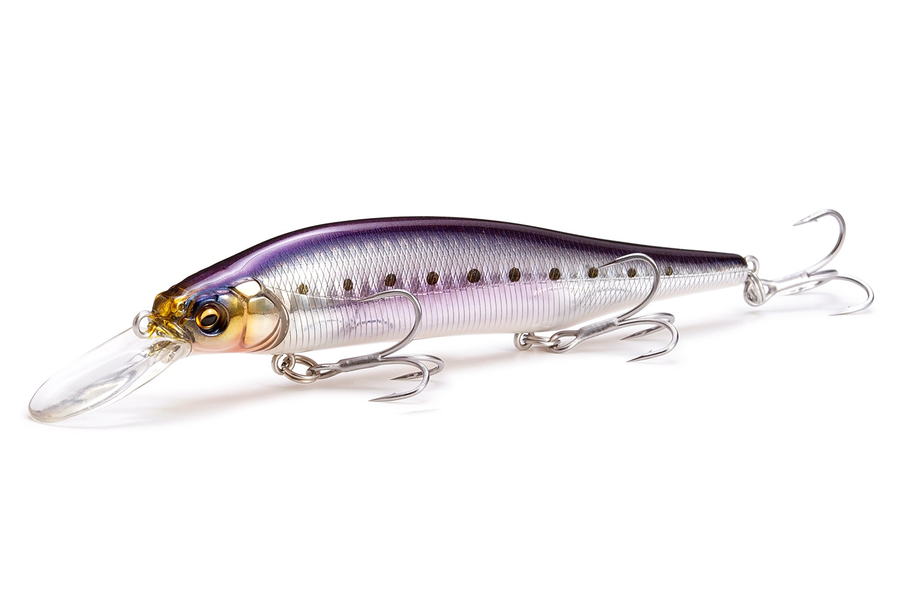

X-80SW
X-80SWは、メガバスの名作ジャークベイト「X-80」を、内部構造から作り直したソルトウォーター専用のミノーです。キャッチコピーは「卓越したローリングアクションと脱軌道アクション」。
80mmのスリムなボディで、小さいベイトを食べているシーバスに口を使わせやすく、向かい風でも飛ぶのが最大の特徴。浮きすぎず沈みすぎない「スローシンキング」で、シーバスがいるレンジを長く引けます。

画像出典:メガバス公式HP
スペック
- メーカー
- メガバス（Megabass）
- タイプ
- スローシンキングミノー
- 全長
- 80.5mm
- 重さ
- 11g
- フック
- #6×2
- カラー
- 全23色（2026年10月に新色6色）
- ターゲット
- シーバス
- 価格
- 1,700〜1,780円（税別）
▼今すぐチェック


X-80SWの特徴
X-80のローリングと脱軌道アクションを、海で
-
ソルト専用に作り直した内部構造
バス用のボディを流用したのではなく、シーバス専用ミノーとして性能を磨き直したモデル。首都圏の湾岸エリアと大阪湾でテストを重ねて作られている。
-
低重心でぶれない泳ぎ
ボディ前部に低重心・高比重のウエイト、後部にタングステンウエイトを配置。潮の流れの中でもしっかり泳ぐ。
-
80mmでも飛ぶ・長く引ける
スーパースリムボディながら、向かい風でも飛ぶロングキャスト性能。スローシンキングで、シーバスの有効レンジを長くトレースできる。
X-80SWの使い方
基本はただ巻きです。着水後に少し沈めてから、ゆっくり一定のスピードで巻いてローリングで誘うのが効果的。ときどきロッドを軽くあおると、X-80らしい脱軌道アクション（ヒラ打ち）で食わせのきっかけを作れます。
明暗のある港湾や、流れのある河川では、流れに乗せて漂わせるドリフトにも使えます。
X-80SWの得意な状況
港湾の常夜灯まわりや河川など、小さめのベイトを食べているシーバスを狙う時に出番です。
大きいミノーに反応しない時でも、80mmのシルエットとローリングで食わせやすいのが強み。スローシンキングなので、表層より少し下を回遊するシーバスにも届きます。小さいベイトにシーバスがついている時に、よく釣れるミノーです。
ワンポイント
流れのある場所では、アップクロスに投げて、流れより少し速いくらいに巻いて明暗の境目を通すと、ローリングの泳ぎが出やすく食わせのタイミングを作りやすいです。
X-80SWシリーズの使い分け
| モデル | 特徴 | こんな |
|---|---|---|
| X-80SW | 80.5mm・ |
基準の |
| X-80SW LBO Shallow | 重心移動システム |
もっと |
| X-80BEAT SW | 超 |
デイゲームや、 |
| X-80Jr. SW | X-80SWの |
さらに |
X-80SWのスペックはメガバス公式HPの記載より。ほかのモデルの詳しいスペックは、それぞれの公式ページで確認してください。
人気カラー
X-80SWの人気カラーを紹介します。

GG IWASHIイワシを再現したナチュラルカラー。澄み潮や日中の1本目に。

PM RED HEAD定番のレッドヘッド。夜でもシルエットがはっきり出る。

JOUYATOU MAGIC2026年10月に加わった新色。常夜灯まわりのナイトゲームを意識したカラー。

HT CHART BACK IWASHIチャートの背中で目立たせたイワシカラー。濁りや朝夕に。
画像出典:メガバス公式HP
▼今すぐチェック
X-80SWに似ているルアー
-

X-80 マグナム＋1 メガバス 詳細はこちら＞同じX-80系の大きいソルトミノー。サゴシ・サワラや遠投が必要な時に。
-
 ビーフリーズ78S
ラッキークラフト
詳細はこちら＞
ビーフリーズ78S
ラッキークラフト
詳細はこちら＞
固定重心の78mmシンキングミノー。泳ぎ出しの速さで、港湾のストラクチャーを攻めたい時に。
-
 サイレントアサシン99S
シマノ
詳細はこちら＞
サイレントアサシン99S
シマノ
詳細はこちら＞
99mm・17gのシンキングミノー。もう少し大きいシルエットや、流れの強い場所に。